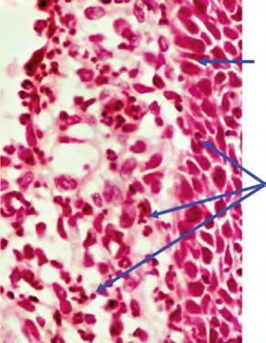

نسخه استخراجشده؛ ترجمه یا تأیید علمی انجام نشده است. وضعیت: captured
پیش از آنکه سلولی وارد میدان شود، سه سد فیزیکی و شیمیایی وجود دارد:
سد اپیتلیالی: اپیتلیوم دهانی کراتینیزه و نوسازی سریع اپیتلیوم اتصالی.
بزاق: شستوشوی مکانیکی بههمراه لیزوزیم، لاکتوفرین و IgA ترشحی.
جریان مایع شیار لثه (GCF): شستوشوی مداوم شیار.
| در سلامت | در التهاب | |
|---|---|---|
| ماهیت | ترانسودا | اگزودا التهابی |
| حجم | بسیار کم | افزایش چشمگیر |
| محتوا | الکترولیت و پروتئین اندک | نوتروفیل، آنتیبادی، کمپلمان، سایتوکاین، آنزیم |
📌 افزایش حجم GCF یکی از زودترین نشانههای عینی التهاب است؛ حتی پیش از قرمزی قابل مشاهده.
نوتروفیل (PMN) غالبترین سلول دفاعی در شیار لثه است و بیش از ۹۵ درصد لکوسیتهای مهاجرتکرده به شیار را تشکیل میدهد.

شناسایی سیگنال ⬅️ کموتاکسی (حرکت جهتدار به سمت محرک) ⬅️ عبور از اپیتلیوم اتصالی ⬅️ فاگوسیتوز ⬅️ کشتن با آنزیم و رادیکالهای آزاد
نوتروفیل هنگام کشتن باکتری، آنزیمهای پروتئولیتیک و رادیکال آزاد به بیرون آزاد میکند. این مواد بافت میزبان را هم تخریب میکنند. یعنی بخشی از تخریب پریودنتال، هزینه جانبی دفاع خود ماست.
اختلالات نوتروفیل با پریودنتیت شدید و زودرس همراهاند و بهترین شاهد اهمیت این سلولاند:
نقص چسبندگی لکوسیتی (LAD): نوتروفیل نمیتواند از عروق خارج شود.
نوتروپنی سیکلیک و سندرم شدیاک-هیگاشی.
سندرم پاپیون-لوفور.
آبشاری از پروتئینهای پلاسمایی با سه مسیر فعالسازی: کلاسیک (با آنتیبادی)، لکتینی و آلترناتیو (مستقیماً با سطح باکتری).
C3a و C5a: آنافیلاتوکسین و کموتاکتیک قوی؛ نوتروفیلها را فرا میخوانند. C5a قویترین جاذب نوتروفیل است.
C3b:اپسونین؛ باکتری را برای فاگوسیتوز علامتگذاری میکند.
کمپلکس حمله به غشا (MAC): در غشای باکتری منفذ ایجاد و آن را لیز میکند.
⚠️ یادآوری از فصل قبل: P. gingivalis دقیقاً همین سیستم را دستکاری میکند تا التهاب ادامه یابد اما کشتار مختل شود.
TLRها ساختارهای مشترک میکروبی را شناسایی میکنند؛ TLR4 گیرنده اصلی LPS است. فعال شدن آن به تولید IL-1، TNF-α و IL-6 منجر میشود.
⚠️ اشتباه رایج ۱: GCF در سلامت ترانسودا و در التهاب اگزودا است.
⚠️ اشتباه رایج ۲: بخشی از تخریب بافت، پیامد جانبی فعالیت خود نوتروفیلهاست.
نوع سؤال: ساخت کلمه · 3 خانه
حروف منبع: C · 3 · b